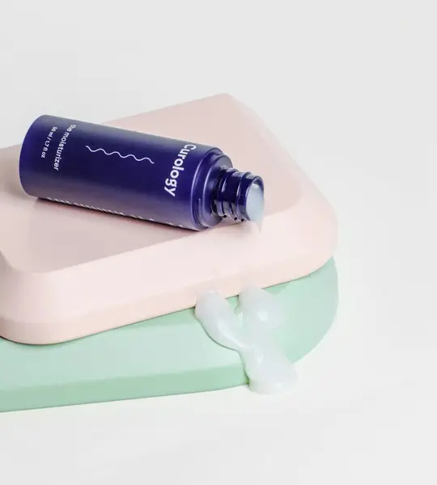

Caderno de Pele
Guia de cuidadosEdição demonstrativa

Rotina facial
O cuidado começa na escuta.
Uma conversa sobre a sua rotina abre espaço para conhecer a pele e planejar os próximos cuidados.
Quero um site assim ↗A primeira conversa
Traga suas dúvidas e conte quais produtos já fazem parte do seu dia.
Seu caderno de rotina
Um espaço para registrar observações e organizar perguntas para a próxima visita.